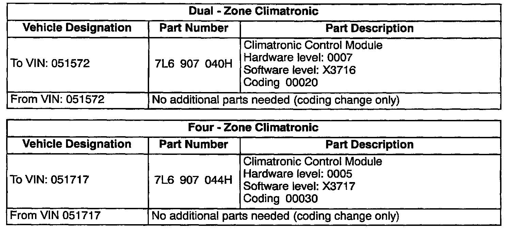
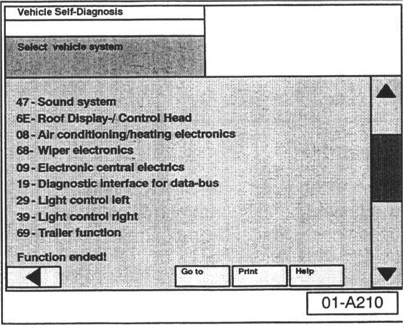
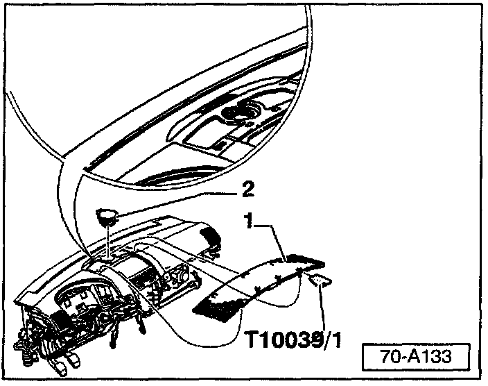
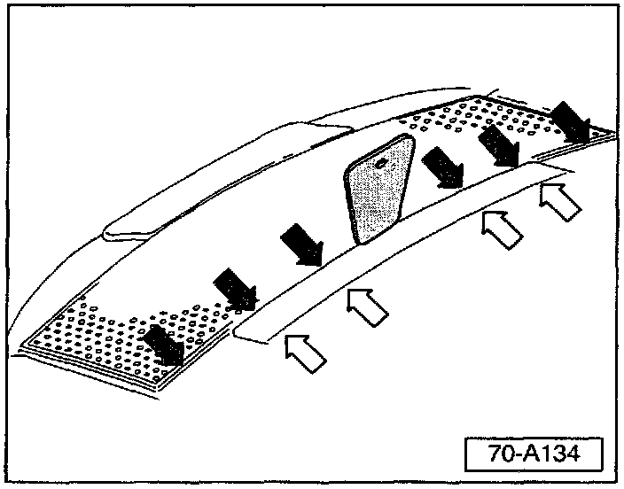
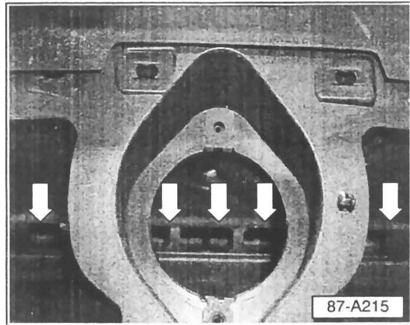
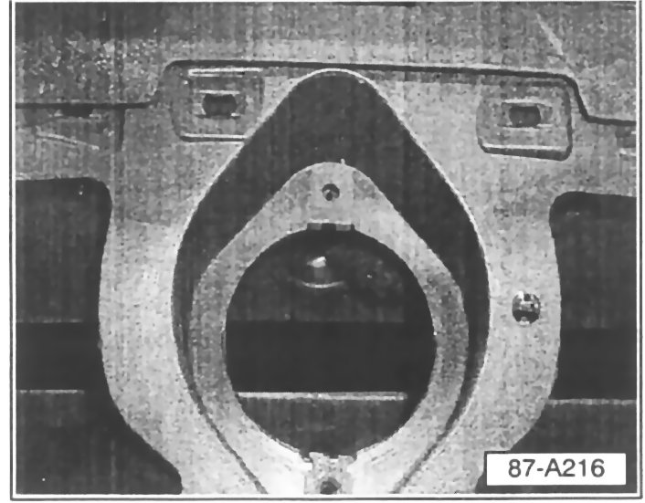
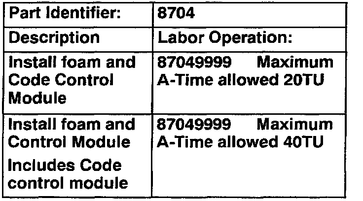

A/C - Condensation on Windshield When Hot or Humid
Group: 87Number: 04-01
Date: Apr. 28, 2004
Subject:
Windshield, Condensation on Exterior Lower Center During Warm/Humid Weather Conditions
Model(s):
Touareg 2004
Condition
Condensation on exterior lower center of windshield during warm/humid weather conditions. Condensation can be removed using windshield wipers.
Service
Materials required:
^ Foam strip Part No: 7L6 857 345 (all vehicles)

^ Vehicle specific parts (see table shown)
CAUTION!
Part numbers are for reference only. Always check with your Parts Dept. for the latest parts information.
Repair Procedure:
- Connect the VAS 5051/5052 Diagnostic tool.
- Switch ignition ON.
- Select "Vehicle Self Diagnosis"
- Use scroll bar to the right of the screen.

- Scroll down and select vehicle system "08-Air conditioning/heating electronics".
- Determine Climatronic control module part number in vehicle (see VAG 5051/5052 screen upper right).
If new control module is required:
- Install control module (see Repair Manual, Group 87 - Climatronic Control Module -J255- with A/C control head, removing and installing.
For all vehicles, Install foam strip in center vent as follows:

Carefully remove dash center vent grill -1- using wedge tool T10039/1 (see notes below).
- Remove speaker assembly -2- if equipped.
Note:
Grill is attached with clips

DO NOT attempt to lift grill at -white arrows-, this trim piece is not part of the grill.
Grill is fragile, exercise care when removing. A second tool is useful when removing grill.
- Remove protective strip (exposing adhesive) on foam strip Part No: 7L6 857 345.

- Install foam strip with adhesive facing down below speaker and over vent opening (arrows).

- Press foam firmly in place ensuring entire vent opening is covered. (indicated by blacked out area).
- Reinstall speaker if equipped.
- Reinstall center vent grill.
Climatronic control module, coding
- Enter function "07" "Code Control Module"
- Enter Code for Control module on keypad
^ Dual Zone = 00020
^ Four Zone = 00030
- Select "Q" to confirm.
Repair verification:
- Verify proper operation of HVAC system.
- Ensure no Diagnostic Trouble Codes (DTCs) are stored in DTC memory.

When procedure applies to vehicles with-in the New Vehicle Limited Warranty, use the table shown.